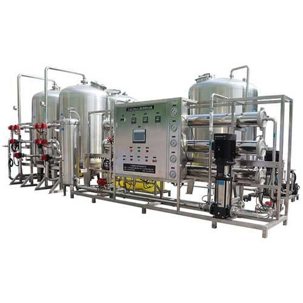

Sistem ozon generator industrial untuk disinfeksi AMDK, kolam renang premium, water treatment industri, dan pengolahan air limbah. Teknologi korona discharge dengan PSA oksigen — efektif, tanpa residu kimia.

Ozon (O₃) adalah disinfektan terkuat yang aman untuk pengolahan air minum — 3.000 kali lebih reaktif dari klorin dan tidak meninggalkan residu kimia setelah waktu kontak. Industri AMDK Indonesia menggunakan ozonisasi sebagai standar wajib BPOM untuk menjamin shelf-life produk 12 bulan tanpa pengawet kimia tambahan. Selain AMDK, ozon banyak diaplikasikan di kolam renang premium hotel, cooling tower, oksidasi besi-mangan, dan disinfeksi air limbah industri.
PT Tirta Sumber Makmur menyediakan ozon generator industrial dengan kapasitas 1 g/jam hingga 10 kg/jam menggunakan teknologi korona discharge tier-1. Sistem dapat dikonfigurasi dengan PSA (Pressure Swing Adsorption) untuk memproduksi oksigen sendiri — menghilangkan ketergantungan pada pasokan oksigen tabung yang merepotkan untuk lokasi remote. Setiap sistem dilengkapi kontrol PLC, sensor ozon residual untuk monitoring otomatis, dan venturi/diffuser injector untuk pencampuran efisien dengan aliran air.
Ozon dihasilkan dengan memecah molekul oksigen (O₂) menjadi atom oksigen yang kemudian bergabung kembali menjadi ozon (O₃). Tiga komponen utama sistem ozon generator TSM:
| Kapasitas Produksi | 1 g/jam – 10 kg/jam |
| Konsentrasi Ozon | 5 – 15% wt (dengan oksigen) |
| Sumber Oksigen | PSA, LOX, atau tabung |
| Konsumsi Listrik | 8 – 15 kWh/kg O₃ |
| Tipe Sel | Korona discharge tubular / planar |
| Kontrol | PLC dengan HMI sentuh |
| Sensor Ozon | UV photometric residual analyzer |
| Sistem Injection | Venturi atau bubble diffuser |
Ozon generator yang baik tidak hanya soal output gram per jam — efisiensi, reliability, dan integrasi dengan sistem hilir sama pentingnya. Berikut pendekatan engineering TSM:
Lini AMDK Brand Regional — TSM memasok ozon generator 8 g/jam dengan PSA oxygen untuk lini produksi AMDK 5.000 cup/jam di Bekasi. Sistem mempertahankan ozon residual 0,3 mg/L pada saat filling secara konsisten, lulus audit BPOM dengan data shelf-life test 12 bulan tanpa kontaminasi mikroba.
Kolam Renang Resort Premium — Resort di kawasan Jakarta Selatan mengganti sistem klorinasi konvensional dengan ozon generator 50 g/jam untuk kolam Olympic-size. Hasil: tidak ada bau klorin, mata tamu tidak iritasi, kualitas air kristal jernih, dan konsumsi klorin turun 80% (klorin tetap dipakai sebagai residual minimal).
Ozon adalah disinfektan 3.000x lebih reaktif dibanding klorin dan tidak meninggalkan residu rasa atau bau setelah 20–30 menit. Ozon juga efektif terhadap virus, kista (Cryptosporidium, Giardia), dan oksidasi besi-mangan yang tidak dapat ditangani klorin. Tidak ada produk samping berbahaya seperti THM (trihalomethanes) yang muncul pada klorinasi air dengan organik tinggi.
BPOM mensyaratkan ozon residual 0,2–0,4 mg/L pada saat filling untuk menjamin shelf-life 12 bulan. Setelah 20 menit, ozon terurai menjadi oksigen sehingga produk akhir tidak mengandung ozon. Konsentrasi ini aman untuk konsumsi manusia dan menjadi standar global industri AMDK.
Korona discharge: efisiensi tinggi (5–15% O₂ ke O₃), output tinggi 1 g/jam–10 kg/jam, butuh oksigen kering, biaya operasional lebih tinggi tapi kapasitas besar. UV ozone: efisiensi rendah (~0,1%), output kecil < 5 g/jam, lebih sederhana, cocok untuk kolam renang rumah atau aplikasi sangat kecil. Untuk AMDK industrial, korona discharge adalah pilihan standar.
Aplikasi utama: (1) Disinfeksi AMDK sebagai alternatif klorinasi, (2) Kolam renang hotel/resort dengan kandungan klorin minimal, (3) Cooling tower water untuk kontrol biofilm, (4) Pre-treatment air untuk oksidasi besi-mangan, (5) Disinfeksi air limbah industri sebelum reuse, (6) Industri makanan untuk sanitasi peralatan dan air proses, (7) Pengolahan air kolam terapi atau spa premium.
Konsumsi listrik ozon generator korona discharge sekitar 8–15 kWh per kg ozon yang dihasilkan. Untuk AMDK 5.000 cup/jam (kebutuhan ozon ~5 g/jam), konsumsi listrik hanya ~0,1 kWh/jam — sangat ekonomis. Biaya tambahan: penggantian sel ozon setiap 5–7 tahun (Rp 10–30 juta tergantung kapasitas) dan oksigen jika menggunakan PSA atau LOX.
Ozon adalah teknologi disinfeksi modern yang memberikan kualitas air superior tanpa kompromi rasa atau aroma. Konsultasikan kebutuhan disinfeksi Anda dengan tim engineer TSM untuk mendapatkan rekomendasi kapasitas dan konfigurasi yang tepat untuk aplikasi AMDK, kolam premium, atau industri Anda.
Tim engineer kami siap membantu Anda menentukan kapasitas ozon yang tepat untuk aplikasi Anda.